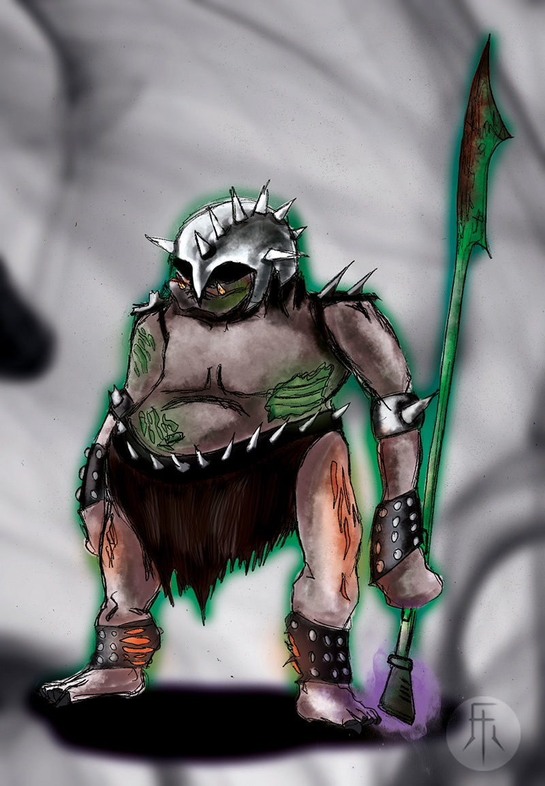
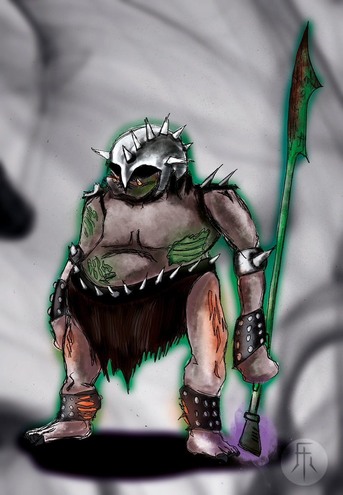

7/7
> Inicio / Portafolio / Personales
Proyectos
Personales
[Diseño Gráfico]
[Ilustración]
[Concept Art]
[Interactividad]
[Story Telling]
[Animación]
Mi Espacio
Esta es una sección que he dedicado para mis proyectos personales, aquellos en los que me dedico por una sincera motivación de llevarlos a la realidad algún día, o por simple diversión.
Aquí no vas a encontrar ningún proyecto solicitado, pago o de desarrollo como diseñador interno, únicamente trabajos de categoría personal, ilustración, diseño interactivo, story telling.
Rol
- Ilustración
- Diseño Interactivo
- Diseño Gráfico
Fecha
- Mar. 2017
- En Curso
Descripción
- Un proyecto personal
que crece de la idea de
crear un juego de cartas.
Nació de la necesidad
de mostrar mi
capacidad de crear contenido
interactivo, luego decidí
aprovechar la idea y el
concepto del juego y
desarrollarlo como un
juego real.
¿Qué es?
Bogotazo es un juego de mesa inspirado en el evento del 9 de Abril de 1948 denominado como el Bogotazo. El juego de mesa consta únicamente de cartas, es un entretenido juego de rol y bluffing donde el objetivo es eliminar a los demás jugadores excepto a tus aliados.
El Objetivo del Juego
Cuando repito objetivo no hablo de lo que hay que hacer para ganar una partida del juego, sino cuál es el propósito del juego como tal. Su objetivo es ser un juego casual para grupos de personas que tengan unos 30 minutos libre y quieran hacer algo con su tiempo. Jóvenes y adultos que estén dispuestos a jugar un juego de mesa real y que no crean que no es ‘rad’ porque no es una app, (aunque también he pensado en desarrollar el juego en una app, pero después del juego real).
El juego también es bastante versátil, es decir, con éste objetivo en mente no se necesita saber de historia o pretender entender lo que pasó en el Bogotazo, ni el juego pretende ser una representación fiel a los hechos históricos, solo usa el evento como su temática principal, habiendo dicho esto, el juego y sus mecánicas son lo suficientemente flexibles que su temática principal se puede adaptar a cualquier otro concepto.
La Historia
El Bogotazo fue un evento trágico que se dio a raíz del magnicidio de Jorge Eliécer Gaitán, candidato a la presidencia del año de 1948. Tras su asesinato, caos y desorden se propagaron por la ciudad de Bogotá. Existieron muchas teorías al respecto sobre quién pudo haber mandado a asesinar a Gaitán, pero en éste juego, la historia puede cambiar.

> Inicio / Portafolio / Archivo
Fariok Vesta & el Zaphiro Negro
[Ilustración]
[Concept Art]
[Desarrollo de Personajes]
[Story Telling]
Rol
- Ilustración
Fecha
- Sept. 2015
Descripción
- Éste es un trabajo que
nació del trabajo en equipo
para el desarrollo de su
posterior animación en el
marco del semillero de
la Universidad Jorge Tadeo.
Crear un Universo
El proyecto fariok es toda una conceptualización y desarrollo de personajes y ambientes para escalar y exportar la historia al formato cómic. Lo que recopilo aquí es una parte del trabajo de conceptualización de los principales personajes de la historia, la exploración de sus características más importantes y de sus personalidades.
¿Qué es?
Fariok y el Zaphiro Negro es una historia personal, es decir, de mi completa autoría, es una idea que he trabajado y mejorado constantemente con los años, por eso surge este proyecto, para dar vida y respuesta a esas preguntas, del cómo son, qué les gusta, qué los motiva, cómo llegaron a ser lo que son, por qué Fariok Vesta y el Zaphiro Negro es digno de ser contado y para dónde va.
La Historia
Fariok es un león criado por su abuelo, debido a que sus padres murieron bajo misteriosas causas; Creció para un día ser parte de la orden del zaphiro negro, una organización compuesta por hechiceros y guerreros que mantienen a la energía oscura y sus criaturas bajo control y así mismo a aquellos que intentan hacerse de su poder. Éste es un trabajo que se hereda a cada gereración, a cada varón, las mujeres son las administradoras de la orden.
Fariok siempre se entrenó y estudió para ser un hechicero, igual que su abuelo, aunque nunca tuvo mucho talento para ello, por no decir que era un desastre, pero es porque él no estaba destinado a ser un hechicero. Su abuelo comprendería esto un poco tarde, pues no logra comentárselo a tiempo su nieto.
Entonces Fariok es el que tendrá que descubrir por sí mismo que no es un hechicero, es un manipulador del fuego, uno en cada dos generaciones y no cualquier manipulador, sino como bien dicta su apellido, un guardián del fuego sagrado.

> Inicio / Portafolio / Archivo
Conceptualización del mundo de Fariok
[Ilustración]
[Concept Art]
[Story Telling]
Rol
- Ilustración
- Modelado 3D
- Storyboarding
Fecha
- Oct. 2015
Descripción
- Un pseudo proyecto
que va de la mano con
el anterior, debido a
que se trata de crear todo un
universo con sus personajes
y lugares, era necesario
trabajar en éste último aspecto.
Crear un Universo
¿Dónde? es una de las preguntas que debía ser planteada al momento en que se concibió el Proyecto Fariok, ya hay una historia, hay unos personajes y la idea de cómo deberían ser los lugares donde se desarrolle la historia, pero realmente, ¿dónde se desarrolla?.
Por eso surge este proyecto, para dar vida y respuesta a esa pregunta, dónde se desarrollarán las extraordinarias batallas de los personajes, dónde se desenvolverán los más importantes acontecimientos de Fariok Vesta y el Zaphiro Negro.
Las ideas
A medida que el protagonista vaya avanzando en la historia, deberá ir atravesando por lugares, estos espacios significan un determinado momento en la historia, conforme ubicamos a Fariok en su hogar, el templo del Zaphiro negro, cuando conozca las cuevas o caundo libre su épica pelea en el campo de batalla.
El Making Of
Una rápida visualización del cómo hice uno de los escenarios, qué técnicas utilicé en éstas ilustraciones digitales para darle una imagen a las ideas e iteraciones de los lugares del mundo de Fariok.
Rol
- Ilustración
Fecha
- Oct. 2015
Descripción
- Un proyecto personal
que surge de la
cintención de crear
una baraja de póker digna
de colección. (Además de
ser uno de mis hobbies).
¿Por qué?
An ace up on the sleeve... or maybe two (Un az bajo la manga... o tal vez dos) es un nombre largo para una baraja de póker, pero súmamente pintoresco.

Los nombres de los aces:
1. (Picas) El Az de la Muerte
2. (Corazones) El Corazón roto
3. (Tréboles) El trébol de la mala suerte
3. (Diamantes) El Diamante maldito
Hobbies
Entre mis hobbies siempre han estado los juegos de cartas, por supuesto uno de sus más famosos representantes es la baraja francesa, un juego de 52 cartas compuesto por cuatro palos cada uno con trece cartas. Uno de mis hobbies, a parte de jugar póker o Blackjack también está en hacer trucos, ilusiones con las cartas, por esa razón, e inspirado por el amor a éstas cartas quise hacer mi propia versión ilustrada.
La Baraja
Para esta baraja en particular se plantean las ilustraciones de las cartas basándose en una gráfica gótica y en una sutil representación al material que compone cada palo, es decir, los tréboles son plantas, los diamantes joyas, las picas una variación de la muerte (para los franceses victorianos), y los corazones, bueno emociones humanas.
Los conceptos en los que está basada la baraja son principalmente la elegancia y algo del dandismo victoriano.
Rol
- Ilustración
Descripción
- Por supuesto no
siempre me encuentro trabajando
en pro a algún proyecto,
en ocasiones simplemente
dibujo para mí.
Gallery Review (clap clap)
La siguiente galería tiene como objetivo el mostrar otra clase de trabajos que han sido desarrollados y que por alguna razón no han sido colocados en los proyectos o no tienen un propósito más allá que el de ser la misma ilustración.
Tipos de técnicas
- Digital
- Análoga
- Mixta
Bowsette
Los siguientes son trabajos de fan-art, memes, ilustraciones relacionadas con proyectos anteriores y en general muestras del dominio de diferentes habilidades ilustrativas, incluyendo trabajo análogo.


 
